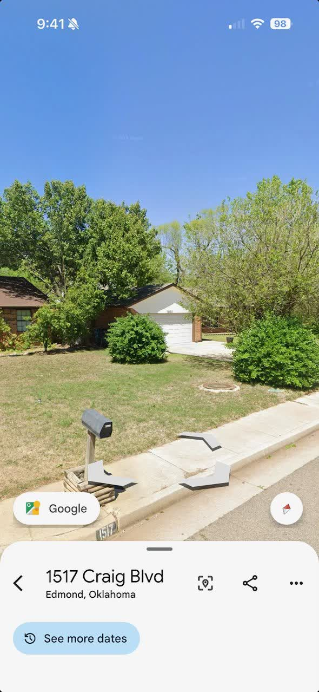
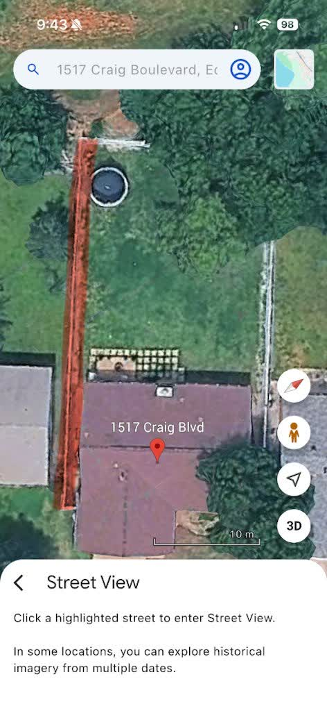
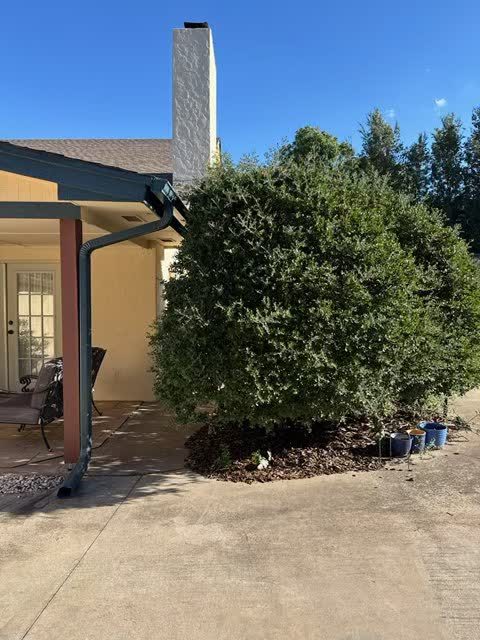
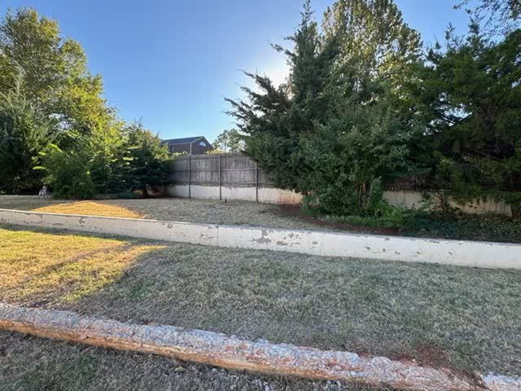

Full instructions for the week of Oct 27–29, 2026, as sent by Donovan, with Justin's field notes added. Work performed by Giving Tree Lawn Care, LLC.
🗂 Job Database — every job this week in one simple, searchable list: addresses, arrival & departure times, hours on site, man-hours, and finished-work photos.
Arrival and departure for every job, with hours on site and man-hours (hours on site × the men on the crew). Updated as each job finishes.
| Date | Job | Arrival | Departure | Hours on site | Man-hours | Photos |
|---|---|---|---|---|---|---|
| Tue Oct 27 | 1517 Craig Blvd, Edmond ✅ | 8:29 AM | 10:32 AM | 2:03:00 | 4:06:00 | 📷 Photos (8) |
| Tue Oct 27 | 2275 NW 227th St, Edmond | 10:52 AM | — | — | — | — |
| Tue Oct 27 | Summit Lakes Entrances 1 & 2, Edmond | — | — | — | — | — |
| Tue Oct 27 | 6309 Norham Ct, Oklahoma City | — | — | — | — | — |
| Wed Oct 28 | 15504 Juniper Dr, Edmond | — | — | — | — | — |
| Wed Oct 28 | 2801 NW 154th St, Oklahoma City | — | — | — | — | — |
| Wed Oct 28 | 2404 NW 154th St, Oklahoma City | — | — | — | — | — |
| Wed Oct 28 | 17400 Braken Dr, Oklahoma City | — | — | — | — | — |
| Wed Oct 28 | 1109 Jamestown Cir, Oklahoma City | — | — | — | — | — |
How to read this: Hours on site = departure minus arrival. Man-hours = hours on site × the men on the crew (Tuesday's crew is 2 men, Wednesday's is 1).
Crew: Justin + Jason


✅ Finished — Tue Oct 27 · On site 8:29 AM – 10:32 AM · 📷 Finished-work photos (8)
Gate code: #5252
1 acre — zero turn useful.
Reference pictures (the Oct 16 text photos Donovan mentioned — added by Justin Oct 25):


Crew: Justin only (Jason unavailable)
Crew: Justin + Jason
Afternoon only: 1:00 PM – 5:00 PM.
Meet at Donovan's house — 2504 NW 154th St, Edmond — at 1:00 PM.
No property list given for Thursday yet.